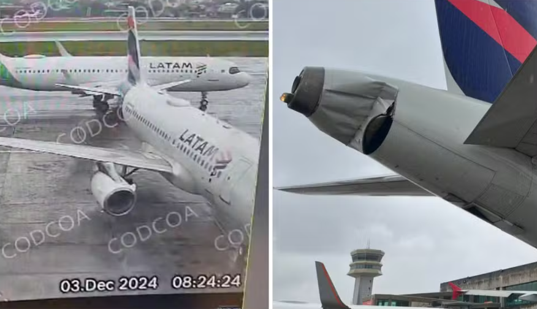

Notícia de Última Hora: PM joga motociclista de uma ponte

Dois aviões da empresa aérea Latam colidiram na manhã desta terça-feira (3) no pátio de embarque e desembarque do aeroporto de Congonhas, na Zona Sul de São Paulo. O incidente ocorreu em baixa velocidade e não deixou feridos. Imagens que circulam por grupos de pilotos da capital paulista flagraram o momento que uma das aeronaves dá uma pequena encostada na lataria de outro avião que estava parado.
O acidente aconteceu por volta das 8h24. Fotos tiradas de uma das aeronaves mostram várias avarias na lataria dos veículos. A concessionária afirmou que "a ponta da asa de uma aeronave com destino a Campo Grande (MS) entrou em contato com a cauda de outra, que seguiria para Brasília (DF)".
Segundo a Aena, concessionária responsável pelo terminal de Congonhas, dois voos envolvidos no incidente sofreram atrasos.
Um dos aviões estava prestes a decolar para Brasília e, segundo relatos dos passageiros, foram cerca de 2 horas até que eles fossem realocados.
Parte dos ocupantes da aeronave iria para um evento sobre crime organizado na capital brasileira, entre eles o ministro do Controladoria Geral da União (GCU), Vinicius Carvalho.
Por meio de nota, a Latam confirmou a colisão entre as duas aeronaves e disse que “o evento não colocou em risco nenhum dos passageiros e tripulantes de ambos os aviões, que foram desembarcados normalmente e em total segurança”.